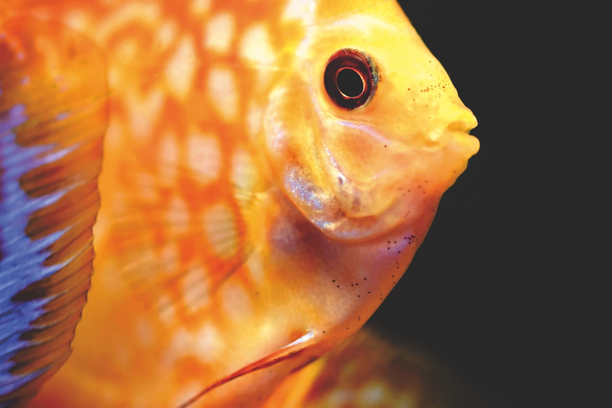
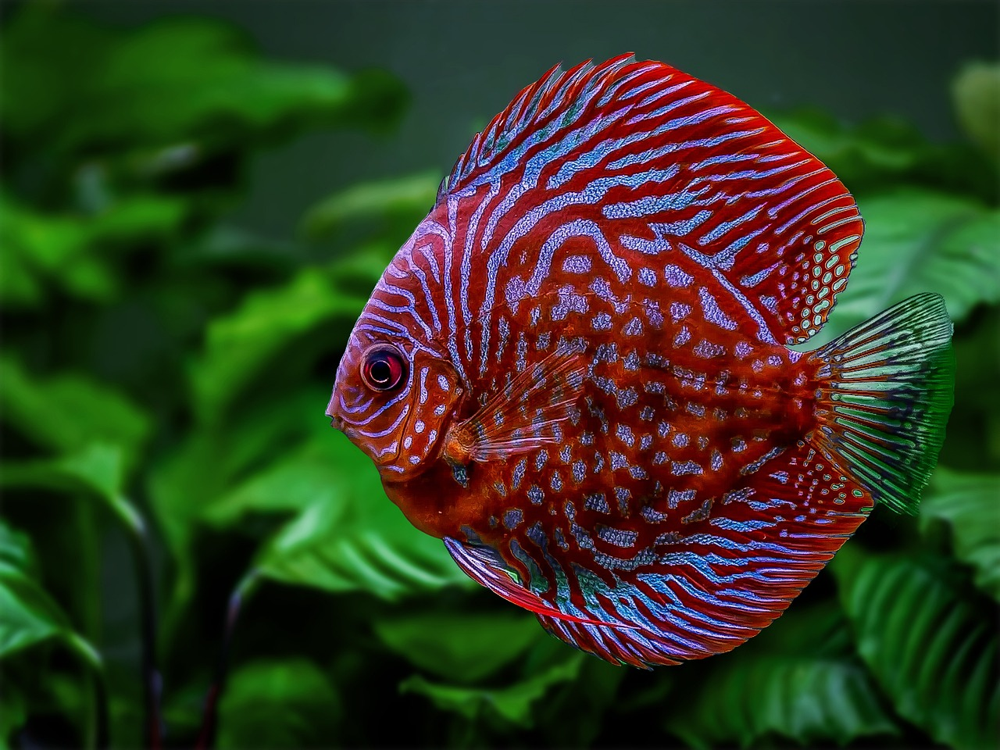
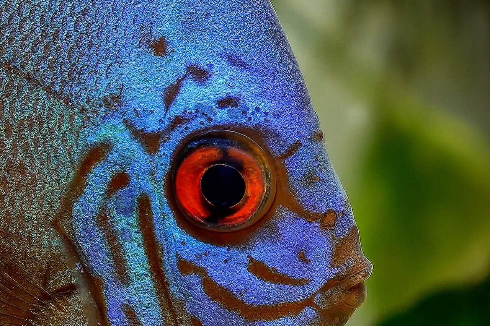

Symphysodon spp., conocidos comúnmente como discos, son peces de agua dulce reconocidos por su belleza y comportamiento fascinante. Originarios de las cuencas fluviales de América del Sur, estos peces exhiben una gama deslumbrante de colores y patrones en sus cuerpos redondeados y comprimidos lateralmente. Su distintiva forma discoidal les otorga una apariencia elegante y aerodinámica en el agua. Los discos son altamente apreciados en el acuarismo debido a su tranquilidad y sociabilidad, así como a su capacidad para formar fuertes lazos con sus cuidadores. Además de su atractivo estético, estos peces son conocidos por su comportamiento territorial y su cuidado parental meticuloso, lo que los convierte en especímenes fascinantes para observar y criar en entornos de acuario adecuadamente cuidados.

El Pez disco como mascota
Medidas para un acuario
Volumen del acuario: Se recomienda un acuario grande para los peces disco, preferiblemente de al menos 75 galones (aproximadamente 284 litros) para proporcionar suficiente espacio para nadar y evitar el estrés por hacinamiento.
pH: : El pH del agua debe estar ligeramente ácido, entre 6.0 y 7.0, ya que los peces disco son nativos de aguas blandas y ácidas en su hábitat natural.
Temperatura del agua: Los peces disco son sensibles a los cambios de temperatura, por lo que mantener el agua entre 26-30°C (79-86°F) es ideal para su salud.

El Pez disco como mascota
Medidas para un acuario
Dureza del agua: Prefieren aguas suaves, con una dureza entre 1-10 dH (dureza de carbonatos) y 1-4 dGH (dureza general). Esto puede lograrse utilizando agua destilada o tratando el agua del grifo adecuadamente.
Filtracion: La calidad del agua es crucial. Debes mantener los niveles de amoníaco, nitritos y nitratos en niveles bajos utilizando un buen sistema de filtración y realizando cambios parciales de agua regularmente.
Escondites : Agrega plantas vivas y troncos o raíces para proporcionar áreas de escondite y crear un entorno natural. Evita objetos afilados que puedan dañar sus delicadas aletas.

El Pez disco como mascota
Medidas para un acuario
Alimentación: Ofrece una dieta variada que incluya alimentos de calidad específicamente formulados para peces disco, como escamas, pellets o incluso alimentos congelados como artemia o larvas de mosquito.
Iluminacion:Proporciona una iluminación suave y difusa en el acuario, ya que los peces disco prefieren áreas sombreadas y se estresan con demasiada luz directa.
Compañeros de acuario: Elige compañeros de acuario pacíficos y que compartan preferencias de agua similares, como algunos tetras, corydoras y otocinclus. Evita peces agresivos o que puedan competir por el espacio o la comida.
Datos de improtancia
Otros datos de importancia de la especie
Longevidad
En la naturaleza, la longevidad del pez disco suele ser de unos 10 a 15 años. Sin embargo, en condiciones de cuidado adecuado en cautiverio, pueden vivir hasta 15 años o incluso más.
Reproduccion
Los peces disco son conocidos por su comportamiento reproductivo. La reproducción puede ocurrir cuando los peces alcanzan la madurez sexual, generalmente entre los 8 y 12 meses de edad. Durante el cortejo, los discos muestran comportamientos como la limpieza de superficies, movimientos de natación sincronizados y cambios en el color del cuerpo.
Frecuencia de reproduccion
La frecuencia de reproducción puede variar dependiendo de las condiciones del acuario y la salud de los peces, pero pueden reproducirse varias veces al año, especialmente si se proporcionan condiciones adecuadas.
Huevos y crias
Después del desove, los huevos son fertilizados por el macho y la hembra. Los huevos son depositados en una superficie plana, como una roca o una hoja de planta, y son cuidados y protegidos por ambos padres. Después de aproximadamente 2-3 días, los huevos eclosionan y las crías emergen. Durante las primeras semanas, las crías se alimentan de un saco vitelino y luego pueden alimentarse de pequeños organismos vivos, como infusorios, yemas de huevo y alimentos comerciales para crías.
Estado en la naturaleza
En su hábitat natural, el pez disco enfrenta algunas amenazas, como la degradación del hábitat debido a la deforestación, la contaminación y la captura para el comercio de acuarios. Sin embargo, aún se considera una especie de preocupación menor en términos de conservación, ya que sus poblaciones en la naturaleza no están actualmente en peligro inminente de extinción. Sin embargo, es importante tomar medidas para proteger su hábitat y regular el comercio para garantizar su sostenibilidad a largo plazo.
Anatomia
Coloracion
Los peces disco son conocidos por su llamativa coloración y patrones únicos, que pueden variar según la especie y la ubicación geográfica. Su coloración a menudo incluye tonos brillantes de azul, verde, rojo y amarillo, lo que los hace muy populares entre los aficionados a la acuariofilia.
Cuerpo
Los peces disco tienen un cuerpo discoidal, que es redondeado y aplanado lateralmente. Esta forma les permite moverse fácilmente entre las plantas acuáticas y otros obstáculos en su entorno natural.
Aletas
Tienen varias aletas que les ayudan a moverse y a mantener el equilibrio. Estas incluyen las aletas dorsal, anal y caudal. Las aletas pectorales y ventrales también son importantes para la maniobrabilidad y la estabilidad.
Boca
Tienen una boca pequeña y orientada hacia arriba, adaptada para alimentarse principalmente de pequeños invertebrados y material vegetal. Sus dientes son finos y están diseñados para triturar alimentos blandos.